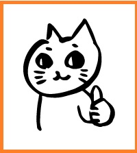
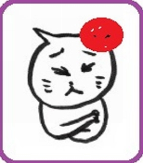
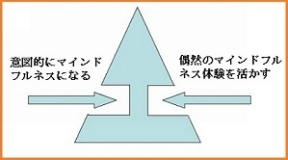
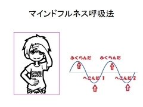
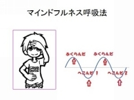
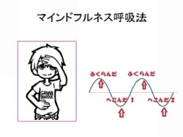

| ３分で読める幸せになるコツ・365日のレッスン vol.7: ＜No188～No212＞ 心のトリセツ メルマガ文庫 | |
| 藤井英雄 | |
| kokoronotorisetsusyuppan (2015) | |
３分で読める幸せになるコツ・365日のレッスン vol.７

「今、ここ」に生きるマインドフルネスと幸せオーラを引き寄せるハッピー・リズメーションで幸せな社会を創る！心のトリセツ研究所・精神科医の藤井英雄です。
この電子書籍は私のメールマガジン「３分で読める幸せになるコツ・365日のレッスン」の約一か月分を編集したvol.7です。まとめて読みたい方や届いたメールをうっかり削除してしまった方のために電子書籍として出版しました。どうぞご活用ください。
＜注意＞
１）メルマガを読み始めて１８８日未満の方はネタバレになります。１８８日過ぎてからお読みいただくことをお勧めします。
２）メルマガ未登録の方もネタバレになります。登録いただいて順番にお楽しみください。
登録はこちらから 無料です♪
本書（本メルマガ）のキーワード
マインドフルネス,
自己肯定感,
アファメーション,
傾聴,
マインドフルネス呼吸法
２０１ 私のマインドフルネス体験 やりたいことリストと伸びしろ
☆☆☆☆☆☆☆☆☆☆☆☆☆☆☆☆☆☆☆☆
☆☆☆☆☆☆☆☆☆☆☆☆☆☆☆☆☆☆☆☆
１）
時は５月の連休中。夏の暑さを思わせる熱気のなか、セミナー直前に駅前の食堂でお昼ご飯を食べていた時のことです。
ドアをあけて一組の親子が入ってきました。
お父さん、お母さんと、そして子供は５歳ぐらいでしょうか。あと、ベビーカーの中には赤ちゃんがいるようです。
子供は自転車用のヘルメットをかぶり、親子４人で楽しくお出かけといういでたちなのですが、どこか様子が変です。
子供は今にも泣きそうな様子で、父親は見るからに不機嫌、母親はすべてをあきらめているかのようにがっかりしています。赤ちゃんはすやすやと寝ていて、泣いていないのだけが救いですね。
で、席につくなり父親の説教が始まります。
「自転車で行くって決めたのはお前だろう！だったら暑いなんて弱音をはくなよ！！」
うつむいて口をぎゅっとつむり黙ったままの息子に畳みかけるように
「お前とはもう二度と一緒に出掛けないからな！！」
そのあともひとしきり説教は続いていました。
あまりの暑さに音をあげて愚痴を言った息子に父親が切れたようです。母親は何か言いたげですが、ここで口をはさんだら火に油を注ぐ結果になると思っているのか黙っています。
それを聞いていて、私も（おそらく店にいたみんなも）暗い気持ちになりました。
父親の感じている怒り、子供の感じている恐怖、母親の感じている落胆が交錯して私の心の中に侵入してきます。
マインドフルネスの修行をしていても悟りを開いたわけではありませんから、外界の刺激に影響されていろんな感情がでます。
それらにマインドフルに気付き続けること。そうすることで反応的に現れてくるネガティブ感情を手放していきます。
この親子が幸せでありますように！
箸を置いて慈悲の瞑想をしているときにひらめきました。
「そうだ！傾聴の本を書こう♪」
暑さがつらくて愚痴を言っている息子に自分のイライラをたたきつけ、せっかくの連休を台無しにしてしまうのではなく、困っている息子を助けるためにもっと効果的でお互いの愛情を深める方法がある。
「それを伝えたい！」
というわけでしばらく傾聴の話を展開します。
横糸は傾聴ですが、縦糸はマインドフルネスと自己肯定感の強化といった趣になるかと思います。
☆☆☆☆☆☆☆☆☆☆☆☆☆☆☆☆☆☆☆☆
☆☆☆☆☆☆☆☆☆☆☆☆☆☆☆☆☆☆☆☆
前回から傾聴の話をしています。
横糸は傾聴ですが、縦糸はマインドフルネスと自己肯定感の強化です。
身近な人が悩んでいると助けてあげたくなります。
しかし、いろいろと知恵を絞って「こうしたらどう」とか「ああしたら」とアドバイスをしてあげても、
｢うーんそうねえ、でも...｣と歯切れの悪い返事がかえって来たりします。
こういう時はじっと耳を傾けて相手の悩みを聞いてあげたほうが役に立てることが多いのです。
最後まで聴いてもらえずに途中で話しの腰を折られたり、すぐにいい返されたり、それは良いとか間違っているとか、判断 評価 批判されたり、ごまかされたり、からかわれたり、そんなこんなでつらい思いをしたことはありませんか？
逆に忙しい時に話しかけられてじゃけんにあつかったり、話を聴いているつもりでも、じつはどんなアドバイスをしようかと考えていたり、なんとなく上の空だったり、ひどい時は全く別のことを考えていたり、新聞やテレビを見ながら相づちだけうっているだけなんて事はありませんか。
私たちのコミュニケーションは希薄で一方通行であることが多いものです。
何をいっても真剣に聴いてもらえないという失望感から人は人生に少しずつ失望していきます。
そして、子供の時からのこんな体験の積み重ねが、心理的な病気や精神的な病気の一因になってしまっていることが多いのです。
逆にお互いの言葉に真剣に耳を傾けて心が通じあえたと思える瞬間が、私たちに「精神的な栄養」を与えます。
この「精神的な栄養」が得られた時、人は自分で悩みや問題を解決する力を取り戻すことができます。
身近な人同士でお互いに相手の言葉に耳を傾けて理解し合う時、多くの悩みは自然に解決に向かっていくでしょう。
さらに
さらに
もしも困っている人の話にあなたが耳を傾けたとしたら
それは...あなたが愛情をそそいだというしるし
あなたが愛情をそそげるなら、それはあなたが愛にあふれているというしるし
あなたは耳を傾けることで２つのすごいことを成し遂げるのです
ひとつは大切な人に愛情をそそぐこと
もうひとつはあなた自身が愛情あふれる人になること
自己肯定感を強化するもっとも有効な方法、それは、あなたの大切な人の言葉にマインドフルに耳を傾けることなのです。
ここでマインドフルネスです。
つづく
☆☆☆☆☆☆☆☆☆☆☆☆☆☆☆☆☆☆☆☆
☆☆☆☆☆☆☆☆☆☆☆☆☆☆☆☆☆☆☆☆
前回から傾聴の話をしています。
横糸は傾聴ですが、縦糸はマインドフルネスと自己肯定感の強化です。
耳を傾ける＝傾聴という行為はうわのそらモードではうまくできません。
うわのそらモードだと、
つい、じゃけんにあつかったり、
話を聴いているつもりでも、
じつはどんなアドバイスをしようかと考えていたり、
なんとなく上の空だったり、
ひどい時は全く別のことを考えていたり、
新聞やテレビを見ながら相づちだけうっているだけ！！
そんな状態に陥ってしまうからです。
ではマインドフルに傾聴するには？
みなさんはここまでのメルマガでマインドフルネスについて理解しています。
だから、次に傾聴とは何かを理解して、マインドフルに傾聴するように心がけるといいでしょう。
☆☆☆☆☆☆☆☆☆☆☆☆☆☆☆☆☆☆☆☆
☆☆☆☆☆☆☆☆☆☆☆☆☆☆☆☆☆☆☆☆
心のトリセツ研究所、精神科医の藤井英雄です。
マインドフルネスとハッピー・リズメーションで幸せな社会を創るをモットーに情報発信をしています。
今回も趣向を変えて傾聴の話です。
傾聴とは読んで字のごとく、相手の言葉に耳を傾けることです。
相手を受容し、共感しつつ傾聴することはカウンセリングの基本的なスキルです。
クライアント（悩みを持つ人）の言葉にカウンセラーが傾聴することで、もつれた糸を解きほぐし、クライアント自身が悩みを解決することを目指します。それがカウンセリングです。
相手の言葉に耳を傾けることのどこにそんな力があるのでしょう？
マザーテレサは、「愛の反対は憎しみではなく無関心である」と説きました。
つまり、愛とは相手に関心を持つことです。
傾聴とは相手の声に耳を傾けることです。
つまり、相手に関心を持ち理解したいと耳を傾ける行為です。
すなわち、「愛＝関心＝傾聴」です。
傾聴には愛を伝える力があるのです。
愛とは相手に関心を寄せてもっと理解したいと願うことです。
そして、傾聴は愛の行為です
「情けは人の為ならず」という言葉があります。
愛の行為をしている聴き手は、徐々に愛情あふれる人になっていきます。
傾聴は自己肯定感を高め、自分自身をも癒す行為なのです。
素晴らしい可能性を秘めている傾聴をあなたも生活に取り入れてみませんか？
☆☆☆☆☆☆☆☆☆☆☆☆☆☆☆☆☆☆☆☆
☆☆☆☆☆☆☆☆☆☆☆☆☆☆☆☆☆☆☆☆
しばらく傾聴の話が続きます。横糸は傾聴です。そして縦糸はいつものようにマインドフルネスです。
たとえば親子関係を例にとってみます。
悩んでいる子供の力になってあげたいと思っていても、方法を知らないと逆効果になることもあります。
今回はそんな例をあげてみます。
まずはシーン１からご覧ください。
シーン１ ----------------
学校から帰ってきた小学校3年生の息子の健太君がしょんぼりしています。ここは母親として元気付けてあげたいところ。
「あら、健太お帰りなさい。元気ないわね。どうしたの？」
「雄二君がね、今日は塾だから遊べないって...」
「それで元気が無いの？しょうがないわねえ」
「塾だなんていってたくせに、さっき公園でサッカーやってたんだ」
「あら、それじゃ、一緒に遊んだらよかったのに」
「だって知らない子もいたんだもん...」
「だめね、引っ込み思案で」
「うるさいなあ！サッカーなんてやりたくなかったんだよ！」
「あら、サッカー好きだったじゃないの？」
「ちがうよ！うそついて別の子と遊んでたから頭にきたんだよ！！ひどいよ」
「ふ～ん、なるほど！たしかにうそつくなんてひどい子ね。そんな子とは遊ばなくってもよかったんじゃない？」
「う～ん、そうなんだけど...」
「もう、はっきりしない子ねえ」
「...」
----シーン１ おわり-----------------
お母さんはしょんぼりしている健太君を励ましてあげたかったのです。しかしお母さんはその愛を伝える方法を知らなかったのですね。
この場面、
傾聴を使うとどうなるでしょう。
明日に続く！
☆☆☆☆☆☆☆☆☆☆☆☆☆☆☆☆☆☆☆☆
☆☆☆☆☆☆☆☆☆☆☆☆☆☆☆☆☆☆☆☆
昨日は友達と遊べずに元気がない息子の健太君。お母さんはうまく励ますことができませんでした。
今日は傾聴を使ってみます。
シーン２をどうぞ
シーン２ -------------
学校から帰ってきた小学校3年生の息子の健太がしょんぼりしています。
ここは母親として元気付けてあげたい気持ちです。
「あら、健太お帰りなさい。元気ないわね。お母さんと話したい？」
「うん。雄二君がね、今日は塾だから遊べないって...」
「まあ、そうなの」
「塾だなんていってたくせに、さっき公園でサッカーやってたんだ」
「そうか...」
「うそついて別の子と遊んでたから頭にきたんだよ！！ひどいよ」
「それで頭にきているのね」
「そうなんだ！ホントひどいやつだよ...」
「ひどいやつだと思うのね」
「うん。でも...一緒にサッカーしてくればよかったかなあ...」
「一緒に遊びたいのね」
「うん！やっぱり僕、公園に行ってくるよ！」
「そう？いってらっしゃい♪」
-----------------------
健太君を元気付けてあげたい！
その気持ちは両方とも同じなのです。
ただ、シーン１とシーン２では結果がまるで逆になっています。
傾聴を知らない場合（シーン１）ではかえって健太君のストレスは強まっています。
健太君はお母さんをわからずやだと思い、お母さんもまた健太君が育てにくい子だなあと感じているでしょうね。
お母さんの思いは空回りしてしまい、親子関係に亀裂が入ってしまいます
一方、傾聴を使ったシーン２では健太君の気持ちを聴いてあげることで、健太君のストレスを緩和し、問題解決に導き、親子の信頼関係も強化されました。
明日も傾聴について
☆☆☆☆☆☆☆☆☆☆☆☆☆☆☆☆☆☆☆☆
☆☆☆☆☆☆☆☆☆☆☆☆☆☆☆☆☆☆☆☆
傾聴の話の続きです。
困っている人がいるとアドバイスしてあげたくなります。助けてあげたいという尊い心です。
ところが、時としてアドバイスはとても危険なことなのです。
さて、今日はその話です。
悩みや愚痴を話したらアドバイスされた。聴いてほしかっただけだったのに...。そんな経験をしたことがあったら今日の話は分かりやすいかも。
お母さんは健太君を元気づけたいと思っています。そのためには人生経験豊かな自分がアドバイスしてあげなくっちゃと思っています。
たとえば
合格率の高い塾はどこか？とか、東京駅から新宿駅までどのルートがベストか？そんな問題ならば単なる情報なのでアドバイスでOKです。
しかし心の悩みを抱えている時はアドバイスしても効果がないばかりか、よけいこころを閉ざしてしまって逆効果になってしまう危険性があるのです。
なぜか？
アドバイスとは何でしょう？
「あなたは○○したほうがいいよ」というとき、「○○」が正しい姿であるからそこを目指せとアドバイスしているわけです。
つまり、話し手のあるがままの姿を否定、批判しています。そして話し手のあるべき姿を聞き手が勝手に決め付けて提案（命令！）しているのです。
そう考えるとアドバイスってとても危険ですね。
もちろん、単なる情報を伝えるのはこの例にはあたりません。東京駅から新宿駅までどう行くべきかなどは、正しい解答があるからです。
しかし個人の悩みにはその人にしかわからない事情もあります。また自分のことは自分で決めたいという欲求もまたあるのです。
アドバイスが正しくてもつい反発してしまう！そんな反応を起こしやすいのです。
心の悩みにはアドバイスよりも傾聴がいい場合が多いのです。
☆☆☆☆☆☆☆☆☆☆☆☆☆☆☆☆☆☆☆☆
☆☆☆☆☆☆☆☆☆☆☆☆☆☆☆☆☆☆☆☆
「幸せな社会を創る♪」心のトリセツ研究所はそのために役に立つ情報を発信中です。今回は傾聴について解説中です
今回は「傾聴の基本姿勢とスキル」
傾聴の基本姿勢はとてもシンプルです
「相手を理解したいと願い、話の腰を折らず最後まで聴く」
傾聴のためのスキルもとても単純です。
心をマインドフルにたもち、アドバイスしたくなるのをこらえてひたすら聴く。
う～ん、もうちょっと具体的な指針がほしいところですね。
というわけで、
＜＜傾聴のスキル＞＞
プロのカウンセラーも使っている傾聴ときくと、いかにも難しそうな印象ですね。しかし基本を抑えておけば大丈夫です。
その基本とは、「話し手が安心して話せる環境をつくり、あるがままの相手を理解したいという気持ちを持ちつつ耳を傾ける」ということです。
１）あいづち、うなづき
タイミングよくあいづちをうったり、うなずいたりすると、話し手はちゃんと関心を持って聞いてもらえているなとわかります。
また、話の続きをききたいという合図をはさむのも効果的です。
「うん」
「なるほど」
「ほほう」
「それで？」
２)オウム返し
相手の話の内容を繰り返して話します。すると、話し手は聞き手が正確に理解してくれていることが分かります。
例「今日は疲れちゃった！」
「疲れちゃったんだね」
上級パターンとして、言葉の内容だけではなく、感情をくんでオウム返しするという方法もあります。
「あ～あ」
「つまらないみたいね」
次回は具体的な事例に沿って傾聴の実際を紹介します。
☆☆☆☆☆☆☆☆☆☆☆☆☆☆☆☆☆☆☆☆
☆☆☆☆☆☆☆☆☆☆☆☆☆☆☆☆☆☆☆☆
相手に愛を伝え、自分も幸せになる！
傾聴について解説しています。
今回は親子の会話（シーン２）を解説します
傾聴の具体的な方法をシーン２のお母さんのセリフで確認します。
☆☆☆☆☆☆☆☆☆☆☆☆☆☆☆☆☆☆☆☆
シーン２を再掲 ここから
学校から帰ってきた小学校3年生の息子の健太がしょんぼりしています。ここは母親として元気付けてあげたい気持ちになりました。
「あら、健太お帰りなさい。元気ないわね。お母さんと話したい？」
「うん。雄二君がね、今日は塾だから遊べないって...」
「まあ、そうなの」
「塾だなんていってたくせに、さっき公園でサッカーやってたんだ」
「そうか...」
「うそついて別の子と遊んでたから頭にきたんだよ！！ひどいよ」
「それで頭にきているのね」
「そうなんだ！ホントひどいやつだよ...」
「ひどいやつだと思うのね」
「うん。でも...一緒にサッカーしてくればよかったかなあ...」
「一緒に遊びたいのね」
「うん！やっぱり僕、公園に行ってくるよ！」
「そう？いってらっしゃい♪」
☆☆☆☆☆☆☆☆☆☆☆☆☆☆☆☆☆☆☆☆
「あら、健太お帰りなさい。元気ないわね。お母さんと話したい？」
悩みを打ち明けたいかどうか、打ち明けるにしても今がそのタイミングなのかは健太君にしかわかりませんね。いちおう確認しておきました。
これは相手からしゃべり始めたときはもちろん略してかまいません。
「まあ、そうなの」
「そうか...」
だまってじっと見つめられていると落ち着かなくなります。あいずちやうなずきなどを入れていくと相手がしゃべりやすくなります。
「お母さんはちゃんと興味を持って聞いる」という気持ちが伝わります。
「それで頭にきているのね」
「そうなんだ！ホントひどいやつだよ...」
健太君のしゃべった内容を聴いて気持ちを確認しました。もしもお母さんの解釈が違っていたら、
「ちがうよ！悲しいんだよ...」
という展開になっていくかもしれません。誤解したまま話を聴いていると健太君は理解してもらったという安心感が得られません。
「ひどいやつだと思うのね」
これはおうむ返しです。おうむがセリフを真似するように返してあげるわけです。じつはこれ、すごい効果があるのです。
１）あなたの言っていることを正確に理解したよという合図になります。
２）さらに、健太君は自分のセリフを他人から聞くことで自分の気持ちに客観的に気づくことができます。
悩みにとらわれている時は自分の気持ちに気づけないこともあります。
「そうなんだ！ホントひどいやつだよ...」になります。すごいでしょ？
「うん。でも...一緒にサッカーしてくればよかったかなあ...」
傾聴されて自分の怒りを冷静に見つめたときに、「一緒にあそびたい！」という自分の本心に光が当たりました。あと一歩です！
「一緒に遊びたいのね」
本人の気持ちを察してすこし後押しします。
お母さんが勝手に解釈したのではなく、本人の中から出てきている気持ちを代弁しただけだということに注目してくださいね。
「うん！やっぱり僕、公園に行ってくるよ！」
悩み解決♪
「そう？いってらっしゃい♪」
悩みは解決したので傾聴モードは解除されています。
すごいでしょ？傾聴って難しいですか？相手の気持ちに寄り添って時にうなずき、時におうむ返しをする。すると勝手に自分で問題を解決してしまうのですね。
これ、最初から「一緒に遊びたいんでしょ？遊んで来たら？」なんて言ったら？とんでもないことになりますね。
といわけで傾聴の威力をご紹介しました。傾聴のシリーズもう少し続きます。
☆☆☆☆☆☆☆☆☆☆☆☆☆☆☆☆☆☆☆☆
☆☆☆☆☆☆☆☆☆☆☆☆☆☆☆☆☆☆☆☆
シリーズで傾聴を解説しています。
批判もアドバイスもせず、相手を理解したいと願って心を込めて耳を傾ける！それが傾聴です。
傾聴はカウンセリングの基礎的なスキルであり、究極のスキルでもあります。
傾聴の効果をまとめました。
１＜ほっとする＞
傾聴されるとそれだけで、「ああっ！話を聴いてもらえた♪」と少しほっとします。
今まではたいてい批判とアドバイスばかりでしたから、じっと聴いてもらえるだけでほっとしてもっと話したいという気になるものです。
２＜考えがまとまる＞
いままでは悩みに心を奪われてしまい、どうしようどうしようとあたふたするばかりでした。
ほっと一息ついたところで素晴らしい知恵や解決法などが潜在意識から湧き上がってきます。
たいていは誰かのアドバイスと同じですが同じ内容でも自分の潜在意識から
湧き上がってきたときは「あっ、そうか♪」と納得できたりするものです。
３＜自己肯定感が強化＞
傾聴されると潜在意識の自己肯定感が強化されます。
たいていの人は自分の話を聴いてもらえていません。すると「あんたの話なんか聞きたくないよ」という暗示が潜在意識に入ります。
そして潜在意識は「自分の話には価値がない！」
さらには「自分には価値がない！」と解釈します。
このようにして人は自己肯定感を損ねていきます。
そこで傾聴です。
じっくりと話を聴いてもらえると「あなたの話を聴きたい」という暗示が潜在意識に入るのです。
そして「自分の話には価値がある♪」
さらには「自分には価値がある♪」と思えるのです。
かくして傾聴されるという体験を通して自己肯定感を強化できるというわけです。
傾聴の効果 続く
☆☆☆☆☆☆☆☆☆☆☆☆☆☆☆☆☆☆☆☆
☆☆☆☆☆☆☆☆☆☆☆☆☆☆☆☆☆☆☆☆
前篇
１＜ほっとする＞
２＜考えがまとまる＞
３＜自己肯定感が強化＞
今日は 傾聴の効果後篇です
４＜愛されていると実感できる＞
自分の話を聴いてくれる人は自分を愛している人だと実感できます。
傾聴は愛の行為ですから。
その結果、人間関係が改善されていきます。
５＜マインドフルネス強化＞
マインドフルネスとは「今、ここ」の現実にリアルタイムかつ客観的に気付いていることです。
マインドフルなとき、自分がネガティブ思考にとらわれていることを客観視できるので冷静になり、ネガティブ感情を手放すチャンスがきます。
傾聴されると話し手は「今、ここ」で感じているネガティブ感情に気付きやすくなります。
すなわちマインドフルネスになりやすくなります。
一方、傾聴するにはある程度マインドフルな状態であることが要求されます。
つまり、傾聴することがマインドフルネスのトレーニングになるのです。
だから私は傾聴を勧めているのです♪
☆☆☆☆☆☆☆☆☆☆☆☆☆☆☆☆☆☆☆☆
☆☆☆☆☆☆☆☆☆☆☆☆☆☆☆☆☆☆☆☆
「新しい気付き」
最近自動車を買い替えたんです。最近の車は交差点でアイドリングがストップするんですね！「エンストしてるんじゃないか？」と少し不安になりました。
私がはじめて乗った車は１０年もののおんぼろ軽自動車でした。しょっちゅうエンストするので、交差点では少しアクセルを踏んでました。
坂道発進でエンストした時の冷や汗！何十年ぶりにその記憶がよみがえりました。そのトラウマに近い記憶と不安感をマインドフルに感じて手放します。
で、ハンドルやブレーキに力をくわえるとストップしたエンジンがよみがえるんですね！
「ふむふむ♪」
この年になって新しい経験をしています。
そこでふと思ったのです。「これってマインドフルネスににてるなあ」と。
メタファーですね！つまり、アイドリングストップしているときは心が「今、ここ」になくてうわのそらモードを漂っている。
そこにちょっとした刺激が加わると、とたんにエンジンが息を吹き返すわけですが、心も「今、ここ」に戻ってくるんです。
マインドフルネスはすべてのことに役に立ちますが、運転中は時に大切です。
マインドフルネスが途切れてうわのそらモードで運転していると事故の元です。
「今、ここ」に心を集中することが安全運転の秘訣です。
そしてマインドフルネスは運転以外のすべてのことに成功するコツでもあります。
☆☆☆☆☆☆☆☆☆☆☆☆☆☆☆☆☆☆☆☆
☆☆☆☆☆☆☆☆☆☆☆☆☆☆☆☆☆☆☆☆
おおっ！このメルマガもついに２００回目♪
ちと恥ずかしいですが、わたし自身のマインドフルネス体験がみなさんの気づきのヒントになれば幸いです
面倒で先送りしたい案件があったのです。で、実際に先送りしていました。
その間、「面倒だな」というネガティブ感情にはマインドレス！
面倒なことを無自覚先送りしていると自己肯定感がどんどん弱くなります。
後でやろう
→今はしない
→今はできない
→私にはそれはできない
徐々にエスカレートしていく無力感！！
この無力感、自覚できていればまだいいのですが、無自覚であれば知らぬ間に潜在意識に忍び込み自己肯定感を損ねます。
嫌な気分が忍び寄り、だんだんとネガティブが深まります
おっと、気付きました♪
気付けばあとは簡単です。
解決策はただ一つ！
先送りしていたことを「今、ここ」で始めるのです。
それ以外にはありません！
私の場合、気付いた瞬間に「よし！やるぞ！！」と決心し準備をはじめて５分くらいで先方から電話があり面倒な仕事自体が消滅してしまいました♪
面倒なことに「今、ここ」で着手すべし！それが今回の学びだったようです。
そしてその学びが達成されたことで必要がなくなった学びの素材は消えてしまったのでしょう。
「必要のある学びだけがくる！（空里英）」
これ、やると決めなかったらきっといつまでも消滅せず目の上のたんこぶになったと思います。

☆☆☆☆☆☆☆☆☆☆☆☆☆☆☆☆☆☆☆☆
☆☆☆☆☆☆☆☆☆☆☆☆☆☆☆☆☆☆☆☆
以前、to do listを「やりたいことリスト」と名前を変えたらとたんに気分が楽になった！！という単純な話を書きました。
（書きましたっけ？）
簡単にいえば、「やらなきゃいけないと思ってやる」とそれは義務だけど、「やりたいからやる！」と考えるととたんにワクワクしてやる気がアップしましたという話でした。
今日はその続きです。
そうは言ってもリストがたまってくるとやっぱり気が重くなってきました。
体調が思わしくなかったりすると執筆する気力がわかず、やりたいことリストがたまってきて、やはり気になってしまいます (^^;)ゞ
で、そんなある日のことです。
やりたいことリストをみていて、
「これは全部のびしろなんだなあ」
突然、そう思えたのです！
そうしたらまたハッピーな気分に♪
伸びしろだと考えようとしたのではなく、ふとそう思えたのです。
それは自分の気持ちにマインドフルに向き合っていたからです。マインドフルにネガティブ思考・感情を見つめていると一歩引いた冷静な視点から物事の本質が見えてきます♪
☆☆☆☆☆☆☆☆☆☆☆☆☆☆☆☆☆☆☆☆
☆☆☆☆☆☆☆☆☆☆☆☆☆☆☆☆☆☆☆☆
マインドフルネス呼吸法について解説します。
マインドフルネスのエクササイズに は A B 二つの系統があるという話を以前しました。
A 今ここで意図的にマインドフルになる
B 偶然のマインドフルネス体験を活かす

B の系統は「はっ！」と我に返る瞬間をとらえてマインドフルネスを確認し、強化するマインドフルネ ス3 秒でした。
これは今までこのメルマガでも何度も取り上げてきました。
しかし 、A の系統、「今、ここ」で意図的にマインドフルになる方法はあまり解説してきませんでした。
今日からしばら くA の系統の話をメインにお届けしようと考えています。
ただし、読むだけ、聴くだけでは効果がありません。どうか実際に試してみてくださいませ。
ところで、「今、ここ」でマインドフルになるとはどんなエクササイズかと言えば...
「よし、今からマインドフルネスのエクササイズをするぞ！」と心に決めてエクササイズするわけですね。
時間と空間を決めてエクササイズに入ります。それが禅寺や瞑想道場なのか、はたまた自宅なのか。
さらに！
銀行や病院の待合室、バスや電車の中、歩いている時でさえマインドフルネスのエクササイズはできます。
さて、具体的な方法はあすから。お楽しみに♪
☆☆☆☆☆☆☆☆☆☆☆☆☆☆☆☆☆☆☆☆
☆☆☆☆☆☆☆☆☆☆☆☆☆☆☆☆☆☆☆☆
私はマインドフルネスのエクササイズで呼吸法の前におでこ手当て法を指導しています。
おでこにそっと手を当てる。それだけで気持ちが落ち着き、マインドフルネスの門が開きます。
ストレス性の胃炎や胃潰瘍など、西洋医学でもストレスは胃に来ます。東洋医学でも同じです。
ストレスがかかると胃経が乱れます。そこで、おでこに手を当てると、胃の経絡（胃経）が整います。
ただし、さわり方にコツがあって、下手に触ると逆効果になります。
おでこの皮膚の血行を改善するのが目的なので、そっとふれるのが大切です。強く圧迫したり、ましてや叩いたりすればストレスが増します。
目的別に使い分けます。
ストレスをかけたいなら圧迫する→短期決戦の時の鉢巻など
リラックスしたいなら柔らかく触る→おでこ手当法
手が冷たくなっていたら、しばしこすって温めましょう。それからそっと額に手をあてます。
意識はおでこにもっていきます。
手が触れているおでこ、
おでこに触っている手
どちらが気持ちが落ち着きますか？
２～３分そのままで気持ちが落ち着いてくるのを感じてください。気持ちが落ち着いてきたなら、いよいよ明日は呼吸法に入ります。
☆☆☆☆☆☆☆☆☆☆☆☆☆☆☆☆☆☆☆☆
☆☆☆☆☆☆☆☆☆☆☆☆☆☆☆☆☆☆☆☆
先日からマインドフルネス呼吸法の話をしています。
昨日は呼吸法の前におでこ手当でリラックスすると、マインドフルネスに入りやすいという話でした。今日は呼吸に注目する話です。
私が呼吸法と呼んでいるもの、それはマインドフルに呼吸を観察することでマインドフルネスを鍛える方法です。
ばくぜんと呼吸を観察するよりも、呼吸の何を観察するのかきめておく方がいいでしょう。
ヴィッパッサナ瞑想（東南アジアのマインドフルネス瞑想）ではおなかの動きを観察します。
禅では鼻をとおる空気の動き、空気に触れて感じる鼻の感覚を観察します。
わたしはセミナーではどちらでも好きな方（感じやすい方）を選んでくださいと言っています。
ここではおなかの動きを例に挙げますね。
まずは自分で感じてください。
息をすうとおなかが膨らみます。
息をはくとおなかがへこみます。
えっ！逆ですか？それならそれで も O K です。腹式呼吸とか胸式呼吸とかにはこだわらなくても大丈夫です。
マインドフルネスはあるがままをあるがまま感じることが大切です。
おなかが膨らむことをかんじたら、「膨らんだ」とか、「ふくらみ」と心の中で、もしくは口に出して呟いておいてください。
へこんだら？へこんだことをかんじたら、「へこんだ」「へこみ」です。

呼吸のたびに、
「ふくらみ」「へこみ」「ふくらみ」「へこみ」
「ふくらみ」「へこみ」「ふくらみ」「へこみ」
「ふくらみ」「へこみ」「ふくらみ」「へこみ」
といっていると、だんだん飽きてきます。
感じることがおるすになって「ふくらみ」「へこみ」がたんなる号令になります。これが「うわのそらモード」です。
エクササイズの最初はだれもがマインドフルネスモードですが、しばらくするとみんなうわのそらモードになってきます。
自分がうわのそらモードだときづいたら？その瞬間はマインドフルネスですね。意識をそっとおなかに戻してください。
＜今日のエクササイズ＞
２～３分つづけてマインドフルネスとうわのそらモードを味わってください。
☆☆☆☆☆☆☆☆☆☆☆☆☆☆☆☆☆☆☆☆
☆☆☆☆☆☆☆☆☆☆☆☆☆☆☆☆☆☆☆☆
先日からマインドフルネスを鍛えるための呼吸法を解説しています。心のトリセツ流・マインドフルネス呼吸法です。
一昨日は
おでこ手当法マインドフルネスの門を開き、
昨日は
おなかの動きを感じて「ふくらみ」「へこみ」とつぶやきました。

へこんだ、ふくらんだを繰り返していて何の役に立つのか？
ところで昨日のエクササイズ、ちゃんとやっていただきました？
＜昨日のエクササイズ＞
２～３分つづけてマインドフルネスとうわのそらモードを味わってください。
瞑想とか呼吸法とかいうと、ふつうは「心頭滅却して精神集中し、雑念を払う！」みたいなイメージがあるじゃないですか？
でも私はすこし違ったイメージを持っています。ひとはそもそも雑念するものなんですね。考えないようにするなんてできないんです。
だからその雑念には気付いていればいい。
日常生活ではうわのそらモードでの雑念（本人は思考とおもっているけれど）だらけです。
よほど計画的、意図的、マインドフルに考えない限りはほとんどの思考は雑念であり、残念ながらネガティブな要素を含んでいるのです。
計画的、意図的、マインドフルな状態ならまずしないようなネガティブ思考を頭の中で反芻しているのがネガティブな人です。
あなたがもしも、ぼうっとしているときはいつも楽しいことを考えているなあというポジティブなひとなら？
それはおめでとうございます。
でも、たいていの人はうわのそらモードになればネガティブなことを考えてしまうのです。
ではどうしたらいいか？
まずは自分のネガティブ思考・感情にマインドフルに気付くことが大切です。
それがはっと我に返る瞬間＝マインドフルネスでした。
しかし、ネガティブ思考・感情に巻き込まれているときにきづくのは難しいのです。
そこで呼吸法です。
呼吸法でいったんマインドフルになる→思考がなくなる→雑念発生する！！
この時の雑念は何もないところから突然発生するのだから気付きやすいのです。
思考のない純粋な環境の中、気付きやすい状況をつくって思考に気付くトレーニングをする。それが瞑想です。
心のトリセツ流・マインドフルネス呼吸法は明日も続きます。
あっ！ちなみに私はむかしから心のトリセツ流・マインドフルネス呼吸法と言っているので今後もこの名称を使いますが、これは瞑想です。瞑想と呼吸法を区別していません。
＜今日のエクササイズ＞
以上をふまえてマインドフルネス呼吸法をもう一度やってみましょう。そして雑念に気付きましょう。
つづく
☆☆☆☆☆☆☆☆☆☆☆☆☆☆☆☆☆☆☆☆
☆☆☆☆☆☆☆☆☆☆☆☆☆☆☆☆☆☆☆☆
昨日はこんな話をしました。
呼吸法でいったんマインドフルになる→思考がなくなる→雑念発生する！！この時の雑念は何もないところから突然発生するのだから気付きやすいのです。
気付きやすい状況をつくって気付く練習をする。それが呼吸法や瞑想法の目的のひとつです。
いわば野球の素振りやシートノックみたいなものですね。
打ちにくい球を打つ練習の前に、まずスイングを確立し、そして打ちやすい球でミートの練習をするのです。
気付きにくい日常生活のなかでリアルな、そして激しい感情に気付くのは難しいのです。だから、まずは落ち着いた環境の中でささいな思考に気付いていく練習をするのです。
これがきちんとできて、そのあとでリアルな現場でネガティブ感情に気付ける。
そこで必要になるのがマインドフルネス３秒ルールのスキルです。
マインドフルに感情を観察すればネガティブ感情は癒される。ところがうわのそらモードで感情に巻き込まれればネガティブ思考が悪化する。
＜本日のエクササイズ＞
呼吸法の大切さがわかってきました？では今日も呼吸法やりましょう。できれば５分ぐらい取り組んでください
☆☆☆☆☆☆☆☆☆☆☆☆☆☆☆☆☆☆☆☆
☆☆☆☆☆☆☆☆☆☆☆☆☆☆☆☆☆☆☆☆
先日来、呼吸法の話をしています。
呼吸法とはいっても、４で吸って、４とめて８で吐くみたいな創る呼吸ではなく（もちろん、創る呼吸法も別の意味で大切ですが）あるがままの呼吸をあるがまま観るマインドフルネス呼吸法です。
呼吸に注目すればいったんは雑念が消える
それはマインドフルネスだから
そこから立ち上がるかすかな雑念
そこがうわのそらモードのはじまり！
うわのそらモードのはじまりをつかまえる
そのための呼吸法です。
ところが、呼吸法を指導すると「雑念だらけだ！」と自分を責める人が出てきます。
ちがうんです！
雑念当たり前なんです。
空白の時間を埋めるように忍び寄る（湧き出る）雑念！
これを観るための瞑想であり呼吸法です
逆に雑念でませんでしたという人
要注意です！
思考に気付いていない可能性があります
よほど瞑想に熟達した人や
悟りを開いた高僧でもない限り
人は雑念から逃れることは難しいです
だから、もしも雑念に気付いたら？
雑念に気付いたこと自体はむしろ喜ばしいことですね。
おや？
これって３秒ルールににてますね
ネガティブ思考にマインドフルに気付いたら
３秒以内に喜びながら再確認
そのように３秒ルールでは解説しました
あるがままを観察するのがマインドフルネス
マインドフルネスを喜ぶのはマインドフルネスではありません。
雑念、ネガティブ思考に気付いてよけい落ち込んでしまう人にむけて補助輪のように提案しているのがマインドフルネス３秒ルールです
同じく、呼吸法の最中に雑念にきづいたら、喜んでもいいくらいです。
もちろん、雑念と気付いて手放せる人や雑念だとネガティブにならない人には不要のテクニックです
マインドフルネス３秒ルールでも不要な補助輪は捨てていただくのでしたね
今日はここまで
☆☆☆☆☆☆☆☆☆☆☆☆☆☆☆☆☆☆☆☆
☆☆☆☆☆☆☆☆☆☆☆☆☆☆☆☆☆☆☆☆
先日来、マインドフルネス呼吸法について解説しています。よく受ける質問がこれです。
「いつやるのが効果的ですか？」
気持ちが落ち着いている時？
気持ちが高ぶっている時？
どちらでもどうぞ！
落ち着いているときには深く気付けるでしょう
高ぶっているときにはいろんな感情を味わえるでしょう
朝？ 寝る前？ 食前食後？
いつでもどうぞ♪
やりたい時がチャンスです。
もちろん、時間を決めてやるのもＯＫです。
ただ、一つだけ注意点があります。
眠くなったらやめた方がいいです。
気持ちが落ち着いてくるので眠くなります
瞑想や呼吸法をやりはじめると→眠る
そういう条件付けはよろしくありません。
不眠症の方で眠る目的で瞑想をするのはありです。それは目的がちがうからです。
マインドフルネスのトレーニングとして瞑想や呼吸法をやるなら、そのまま寝ない方がいいです。逆に眠いときは要注意ですね
「自分は眠気にとらわれている！」
そう実況すると眠気が取れることもあります。おためしあれ♪
あとおすすめなのが待ち時間ですね
銀行や病院の待ち時間
本を読んで有意義にまつのか
それともマインドフルにすごすのか
呼吸法や瞑想をして過ごすのか
それはご自分の判断でどうぞ
イライラして待つのだけはやめましょう
☆☆☆☆☆☆☆☆☆☆☆☆☆☆☆☆☆☆☆☆
☆☆☆☆☆☆☆☆☆☆☆☆☆☆☆☆☆☆☆☆
呼吸法のシリーズの最終回です
まとめておきます
マインドフルネスのエクササイズに は A B 二つの系統があります
A 今ここで意図的にマインドフルになる
B 偶然のマインドフルネス体験を活かす
呼吸法や瞑想はＡの意図的になる系統です
おでこに手をあて
気持ちが落ちついたら
おなかの動きに注目し
膨らんだことを感じたら「膨らんだ」
へこんだことを感じたら「へこんだ」
そう念じることでマインドフルを保つ
うわのそらモードになって雑念がでたら
雑念と名前をつけて手放す
うわのそらモードになりやすい人は
呼吸のたびに１→２→...→１０→１
そうカウントする。まちがえることで
うわのそらモードに気付くためでした。

呼吸に注目すると思考が消える
消えて真っ白になったこころにでてくるので雑念に気付きやすい
雑念に気付き手放す
雑念に気付き観察する
それぞれの段階にあわせて
呼吸法を楽しんでください
いずれリアルな日常生活で
ネガティブ思考・感情を手放すために
以上、呼吸法のシリーズ終了です
☆☆☆☆☆☆☆☆☆☆☆☆☆☆☆☆☆☆☆☆
☆☆☆☆☆☆☆☆☆☆☆☆☆☆☆☆☆☆☆☆
先日、あるＤＶＤをみていたら冒頭にこんなテロップが流れてとても感動たんですよ。
人生には重要な日がふたつある
生まれた日と、そして
生まれた意味を知る日
b y マーク・トウェイン
なんかもう、その日は一日中テンションが高くなりました。
みなさんにもぜひシェアしたい♪
そんな気分になったのでご紹介します。
ちなみに私の生まれてきた意味はこれ
マインドフルネスで幸せになる
マインドフルネスで幸せな社会を創る
良かったらみなさんのも教えてください
☆☆☆☆☆☆☆☆☆☆☆☆☆☆☆☆☆☆☆☆
☆☆☆☆☆☆☆☆☆☆☆☆☆☆☆☆☆☆☆☆
先日、出前でとんかつ定食を頼んだんです。
トンカツが結構好きなんですが、その時は肉が硬かったんですね。で、「柔らかいとんかつがいいなあ」と思ったんですね。
そのことを、ふと思いだしたので、今日はポジティブ思考についての考察です。
「硬いとんかつが嫌だ！」というのはネガティブ思考ですね。
これをポジティブに持っていくにはいくつかの方法があります。
そのうちの一つは、
硬いけども味はいいとか、
安いとか、器がきれいだとか、
店員さんが愛想がいいとか
別のいい面を探す方法です。
もう一つが、
「硬いとんかつが嫌だ！」をポジティブに言い換える方法です。
「硬いとんかつも、まあ、好きだ...」
これではまるきりウソですね。
これではうまくいきそうにありません。
この場合は、
「柔らかいとんかつが好きだ♪」
これならウソではありません。
で、最近、私がよくつかっているのが
このパターンです。
「うーん、硬いなあ...」というネガティブな想念が出てくるのは仕方ないですね。しかしそれをそのままにはしないんです。
マインドフルにネガティブ想念に気付いて手放すだけでもいいのですが、一歩すすんでポジティブに言い換えてみるんです。
「うーん、硬い...はっ！そうだった。柔らかいとんかつだ大好きだ♪」
思考は現実化します。
硬いとんかつの文句をいえば、次もかたいとんかつがきます。
理想を夢に描き、柔らかいとんかつをイメージしてワクワクした感情とともに
「やわらかいとんかつが大好きだ♪」
と言えば、次こそは柔らかいとんかつが目の前に現れる確率がアップするでしょう。
それが引き寄せの法則♪
今日はポジティブ思考のヒントでした。
そう考えてみると嫌なことって、自分の理想をはっきりさせるために有効活用できそうですね♪
☆☆☆☆☆☆☆☆☆☆☆☆☆☆☆☆☆☆☆☆
☆☆☆☆☆☆☆☆☆☆☆☆☆☆☆☆☆☆☆☆
セミナー開催のため大阪空港に近づいた飛行機から見えた街並み
この一瞬、たった一枚の窓から見えただけでもこれだけの人が住んでいます。
時折見える古墳は歴史を感じます。過去から今まで、どれだけの人が一枚の写真の中に住んでいたのでしょう
その人たちの数だけ、悩み苦しみがある！
そう思った時、マインドフルネスをはやく伝えたいそう思った次第です。
ところが！！
その尊い志とはうらはらにどうにもテンションが盛り上がりません
(^^;)ゞ
というのも、その日は風邪気味で頭がぼうっとしていました。
「こんな状態では十分に指導できるかしら？」と不安にもなりました。
その不安はマインドフルにうけとめますがやっぱり自分の健康管理は大切だなと、そう思った次第です。
＜慈悲の瞑想＞
何度か紹介したこともありましたね
生きとし生けるものの幸せを願う前に、まず、自分自身が幸せであることを願います。
自分が幸せであってはじめて他の人の幸せに力をかせます。
まず自立、そのあとで奉仕
慈悲の瞑想の全文はこちらです
心を込めて唱えると
とてもいいことがありますよ♪
この日、私も心を込めて唱えました。
「私が幸せでありますように」
「私の悩み苦しみがなくなりますように」
以下。全文はこちらに♪
【慈悲の瞑想】
私が幸せでありますように
私の悩み苦しみがなくなりますように
私の願いごとが叶えられますように
私に悟りの光が現れますように
私が幸せでありますように、（３回）
私の親しい人々が幸せでありますように
私の親しい人々の
悩み苦しみがなくなりますように
私の親しい人々の
願いごとが叶えられますように
私の親しい人々にも
悟りの光が現れますように
私の親しい人々が幸せでありますように
（３回）
生きとし生けるものが
幸せでありますように
生きとし生けるものの
悩み苦しみがなくなりますように
生きとし生けるものの
願いごとが叶えられますように
生きとし生けるものにも
悟りの光が現れますように
生きとし生けるものが
幸せでありますように（３回）
私の嫌いな人々も
幸せでありますように
私の嫌いな人々の
悩み苦しみがなくなりますように
私の嫌いな人々の
願いごとが叶えられますように
私の嫌いな人々にも
悟りの光が現れますように
私を嫌っている人々も
幸せでありますように
私を嫌っている人々の
悩み苦しみがなくなりますように
私を嫌っている人々の
願いごとが叶えられますように
私を嫌っている人々にも
悟りの光が現れますように
生きとし生けるものが
幸せでありますように（３回）
Ａマインドフルネスと３秒ルール
０ メルマガスタートします♪
１ 言葉には力がある
２ ネガティブ思考３つの原因
３ ふと我に返る直前までは
４ マインドフルネスの欠点
５ 勝手に手放されるネガティブ思考
６ マインドフルネスは３秒間！？
補足 「喜びながら」について
７ なぜ３秒以内に？
８ 何を喜ぶのか？
９ ３秒ルール 実例 明日はプレゼン！
１０ ３秒ルールステップ２・感情に名前
１１ マインドフルネス３秒ルール・嫉妬
Ｂ自己肯定感とアファメーション
１２ 自己肯定感とは？
１３ マインドフルネスと自己肯定感の関係
１４ 心のトリセツ全体像
１５ ほめられ上手になる
１６ 自分でほめる
１７ アファメーションは肯定的自己宣言
１８ 肯定形で作るべし！（VS否定形）
１９ 現在形で作るべし（VS願望形）
２０ 現在形で作るべし（VS未来形）
２１ 私のマインドフルネス体験 怒りと一次感情
２２ 能動形で作るべし（VS受身形）
２３ わくわく形で創るべし（VS義務形）
＜ポジティブ日記＞
２４ Ｑ＆Ａ 消えない不安
２５ シンプルにわかりやすく作るべし♪
２６ 手書きすべし♪
２７ 毎日唱えるべし♪
２８ 心をこめてマインドフルに唱えるべし♪
２９ 行動でもアファメーションすべし♪
３０ １歩ずつチャレンジする
３１ トンネルは両方から
３２ ハッピー・リズメーション
３３ ラッキーバージョン
３４ 一石三鳥のハッピー・リズメーション
３５ ポジティブスパイラル
☆身体の声を聴く
３６ 心のトリセツ全体像
３７ 体の声の聴き方
３８ 自律訓練法
３９ バランス
４０ マインドフルにたべる
４１ 身体の声を聴く
４２ おでこ手当て
☆怒り！
４３ 怒りについて質問を頂きました
４４ 怒り２ 怒りは快感？
４５ 怒り３ 怒りが必要なとき
４６ 怒り４ 一次感情と二次感情
４７ 怒り５ 気づきが足りない
４８ 怒り６ 正当な怒り？
４９ 怒り７ 完ぺき主義？
５０ 怒り８ 怒りとは？
５１ 怒り９ 慈悲の瞑想１
５２ 怒り１０ 慈悲の瞑想２
５３ 怒り１１ 慈悲の瞑想への質問
５４ 怒り１２ 怒りを鎮めるアファメーション
５５ 怒り１３ 怒りにも効くおでこ手当て
５６ 怒り１４ さむいは禁句？
５７ 怒り１５ 嫉妬は怒りに似ています
☆不安と恐怖を乗り越える
５８ 不安と恐怖を乗り越える１
５９ 不安と恐怖２ おばけなんかこわくない
６０ 不安と恐怖３ 理解できれば怖くない
６１ 不安と恐怖４ アキレス腱のストレッチ
６２ 不安と恐怖５ おだやかな呼吸
６３ 不安と恐怖６ おでこ手当て
６４ 不安と恐怖７ ドラクエに学ぶ１
６５ 不安と恐怖８ ドラクエに学ぶ２
６６ 不安と恐怖９ ドラクエに学ぶ３
６７ 不安と恐怖１０ 完ぺき主義
６８ 不安と恐怖１１ そもそも恐れとは？
６９ 私のマインドフルネス体験
７０ 心のトリセツの全体像をふりかえる
７１ 自分をほめる１
７２ 自分をほめる２ 長所をほめる
７３ 自分をほめる３ 普通をほめる
７４ 自分をほめる４ 短所もほめる！
７５ 自分をほめる５ 出来たところをほめる
７６ 自分をほめる６ ほめるところを創る
７７ 自分をほめる７ have? do? be!
７８ 自分をほめる８ ごほうび♪
７９ 自分をほめる９ ほめられ上手になる
８０ 人をほめる
８１ 私のマインドフルネス体験 ダンス
８２ あせり１ 丁寧に仕事をする
８３ あせり２ わざとゆっくり
８４ あせり３ リスト
８５ あせり４ 赤毛のアンに学ぶ不安解消法
８６ 私のマインドフルネス体験
８７ 映画に見る心のトリセツ バックツーザフューチャー
８８ 自分を大切にする
８９ 月曜の朝を乗り切る
９０ 癖に気付く
９１ ほとんどの行為は上の空！
９２ 私のマインドフルネス体験
９３ 私のマインドフルネス体験
マインドフルネスとは？
９４ マインドフルネスとは１
９５ マインドフルネスとは２
９６ マインドフルネスの効用
９７ マインドフルネスの欠点
マインドフルネスの強化法
９８ 強化法１ 「今、ここ」を感じる
９９ 強化法２ マインドフルに行動する
１００ 強化法３ マインドフルネス３秒ルール
１０１ 3秒ルールの実例
１０２ 「今、ここ」を生きる
１０３ 「今、ここ」を生きる２
１０４ 意図的にポジティブに考る
認知のゆがみ 行き過ぎたネガティブに気付く
１０５ メールの返信が来ない！
１０６ 認知のゆがみ１ 完ぺき主義
１０７ 認知のゆがみ２ 一般化のしすぎ
１０８ 認知のゆがみ３ 心のフィルター
１０９ 認知のゆがみ４ マイナス化思考
１１０ 認知のゆがみ５－１ 結論の飛躍（１）心の読みすぎ
１１１ 認知のゆがみ５－１ 結論の飛躍（２）先読みの誤り
１１２ 認知のゆがみ６ 誇大視と過小評価
１１３ 認知のゆがみ７ 感情的決めつけ
１１４ 認知のゆがみ８ すべき思考
１１５ 認知のゆがみ９ レッテル貼り
１１６ 認知のゆがみ１０ 自己関連づけ
１１７ A子さんの場合
１１８ B君のネガティブ思考
１１９ B君のネガティブ思考２
１２０ 私のマインドフルネス体験 釣果
ポジティブ思考のヒント
１２１ マインドフルネス3秒ルール
１２２ 形から入る
１２３ 形から入る２
１２４ 形から入る３
１２５ おでこ手当
１２６ 自分を許す―まっ、いいか１
１２７ 人を許す―まっ、いいか２
１２８ 良い面に注目し、ほめる
１２９ 災い転じて♪
１３０ 自分はラッキーだと知る１
１３１ 自分はラッキーだと知る２
１３２ 自分で決める
１３３ 理想の姿を思い描く
１３４ よし、楽しもう♪
１３５ マインドフルに楽しむ
マインドフルネス体験
１３６ 私のマインドフルネス体験 納豆エクササイズ
１３７ 私のマインドフルネス体験 割り込み
１３８ やる気にならない？
ハッピーリズメーションと７つの習慣で幸せ力アップ！
１３９ ハッピー・リズメーションとは
１４０ 四行詩のアファメーション
１４１ ポジティブな言動の習慣化
１４２ 正しい唱え方
１４３ 開発秘話
１６６ 言い間違いやすいのが長所です
１４４ 自己肯定感を強める効果
１４６ セロトニンと脳機能
１４７ 第１の習慣 ラッキーサイクル
１４８ 第２の習慣 私が好き 自分は大切な存在だ
１４９ 第３二の習慣「あなたも好き」 他人を愛する
１５０ 第４の習慣 「まっ、いいか！」 自分のために許す
１５１ 第５の習慣 ワクワクするイメージ
１５２ 第６の習慣 「今、ここ、すぐ」
１５３ 第７の習慣 楽しく「やる」
１５４ まとめ
わたし自身のマインドフルネス体験・他
１５５ 私のマインドフルネス体験 運転
１５６ 私のマインドフルネス体験 ワーカーホリック
１５７ 私のマインドフルネス体験 シャッターチャンス
１５８ 言葉の力 ４と死
１５９ O&A マインドフルネスは宗教ですか？
１６０ O&A マインドフルネスとはポジティブ思考ですか
１６１ Q&A マインドフルネスは一時しのぎですか？
１６２ Q&A ３秒ルールのあと
１６３ Q&A マインドフルネスとは精神集中ですか？
１６４ マキさんのメルマガはお勧めです
１６５ ティック・ナット・ハン
ダイエット企画
１６６ マインドフルネスでダイエット１
１６７ マインドフルネスでダイエット２
１６８ マインドフルネスでダイエット３
１６９ マインドフルネスでダイエット４
１７０ 私のマインドフルネス・ダイエット体験
１７１ 私のマインドフルネス・ダイエット体験２
わたし自身のマインドフルネス体験・他
１７２ アマゾンレビューより
１７３ 奇跡のカード
１７４ 重軽石の秘密
１７５ 私のマインドフルネス体験 信号
１７６ Ｑ＆Ａ ２つを同時に観る
１７７ 私のマインドフルネス体験 洗浄剤
１７８ 考えるな！感じよ♪
１７９ マトリックス
１８０ ミッション
１８１ 私のマインドフルネス体験 桜島のどか灰！
１８２ 私のマインドフルネス体験 うわのそら運転に気付く
１８３ わたし自身のマインドフルネス体験 イライラさせられた！
１８４ 私のマインドフルネス体験 音が出ない！
１８５ マインドフルな時間
１８６ 感情は自分の責任
１８７ わたし自身のマインドフルネス体験 単調な作業にありがとう
藤井英雄 心のトリセツ研究所代表
精神科医・医学博士
マインドフルネス実践家・日本キネシオロジー学院顧問
心理学・東洋医学の豊富な知識に加えて、40年の瞑想歴、20年以上のマインドフルネスの実践を通じ、ネガティブ思考を克服した自らの経験をもとに、マインドフルネスの指導を開始。ブログやフェイスブック、セミナー、出版（下記）を通じて積極的に情報発信。
ちなみにマインドフルネスとは、「今、ここ」を生きることで、あるがままの世界を感じ、ネガティブ思考を手放してポジティブに生きるスキルである。あのgoogleがマインドフルネスを社員研修に取り入れたことで注目されている。
従来、マインドフルネスの習得には長期間にわたる禅や瞑想の修行が不可欠であったが、伝統的なマインドフルネス瞑想をもとに、日常生活のなかで手軽にマインドフルネスを習得できる画期的なプログラム「３秒でポジティブになる！心のトリセツ流・マインドフルネス入門」を開発し指導している。
さらに、瞑想の経験がない人でも数か月の実践でマインドフルネスの指導者になれるインストラクター養成講座も同時に開催。
☆＜心のトリセツ研究所のミッション＝マインドフルネスで世界を平和に♪＞
まず、自分自身がマインドフルネスで幸せになる。
そしてその幸せを自分のまわり（半径1メートル！）に広げる。
その人もまたマインドフルネスで幸せになり、
自分のまわり（半径1メートル！）を幸せにする。
ついには世界中の人がみな幸せになる。
その結果、世界中が平和になる。
その夢の実現を自らの使命（ミッション）とし、「心のトリセツ流マインドフルネスインストラクター養成講座」を鹿児島および関西にて開催。
マインドフルネスに関する著書一覧 http://amzn.to/19Wvr6q
１）ビジネスマンのための「平常心」と「不動心」の鍛え方（同文館出版）
２）幸せオーラを引き寄せる ハッピー・リズメーション（秀和システム）
３）３秒で幸せになる！マインドフルネスの奇跡（クローバー出版・2015年/準備中）
そのほか、電子書籍シリーズ「100円で読む・心のトリセツ」刊行中
サイト 心のトリセツ.com
http://xn--u9j9h1ao4on18y.com/
無料メルマガ 「３分で読める幸せになるコツ・365日のレッスン」
https://www.agentmail.jp/form/pg/1793/1/
【イラスト協力】
GRANADOODLE[グラナドゥードゥル]様
http://plaza.rakuten.co.jp/underdog/
ソザイヂテン様
http://www.sozaijiten-business.rash.jp/
猫のイラスト yoko8ch様
https://coconala.com/users/62303
かわべよしこ様
https://coconala.com/services/36561
☆☆☆☆☆☆☆☆☆☆☆☆☆☆☆☆☆☆☆☆
copyright 心のトリセツ研究所 藤井英雄
☆☆☆☆☆☆☆☆☆☆☆☆☆☆☆☆☆☆☆☆